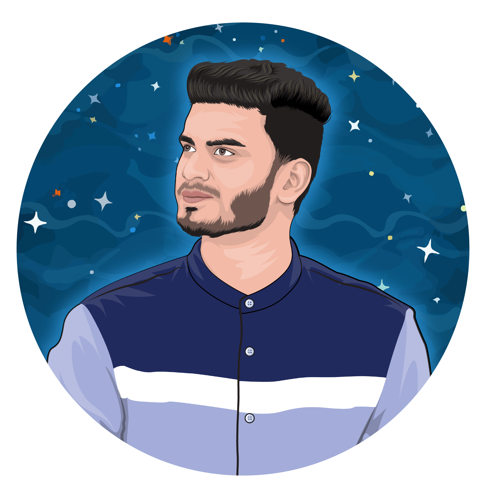

<script src="https://ajax.googleapis.com/ajax/libs/jquery/3.3.1/jquery.min.js"></script>
<link href="https://maxcdn.bootstrapcdn.com/font-awesome/4.2.0/css/font-awesome.min.css" rel="stylesheet">
<link rel="stylesheet" href="https://maxcdn.bootstrapcdn.com/bootstrap/3.3.5/css/bootstrap.min.css">
<script src="https://cdnjs.cloudflare.com/ajax/libs/twitter-bootstrap/3.3.5/js/bootstrap.min.js"></script>
<link rel="stylesheet" href="https://cdnjs.cloudflare.com/ajax/libs/OwlCarousel2/2.3.1/assets/owl.carousel.css">
<link rel="stylesheet" href="https://themes.audemedia.com/html/goodgrowth/css/owl.theme.default.min.css">
<link href="https://cdnjs.cloudflare.com/ajax/libs/animate.css/3.7.2/animate.min.css" rel="stylesheet">
<link href="https://cdnjs.cloudflare.com/ajax/libs/material-design-icons/3.0.1/iconfont/material-icons.min.css"
	rel="stylesheet">
<script src="https://cdnjs.cloudflare.com/ajax/libs/OwlCarousel2/2.3.1/owl.carousel.min.js"></script>
<link rel="stylesheet" type="text/css" href="team.css">
<script src='https://kit.fontawesome.com/a076d05399.js'></script>
<!--font-->
<link rel="stylesheet" href="https://cdnjs.cloudflare.com/ajax/libs/font-awesome/4.7.0/css/font-awesome.min.css">
<!--font-->
<link rel="stylesheet" href="https://use.fontawesome.com/releases/v5.5.0/css/all.css">
<!--font-->
<link rel=" stylesheet" href="https://cdnjs.cloudflare.com/ajax/libs/font-awesome/4.7.0/css/font-awesome.min.css">
<!--font-->


<!-- teams -->
<section class="teams" style="width:100%;">
	<div class="container">

		<div class="row">
			<div class="col-sm-12">
				<div id="customers-teams" class="owl-carousel">

					<!--team 1 -->
					<div class="item box">
						<div class="shadow-effect">
							
							<h2>Sup, I'm <b style="color: black;">Faizy</b></h2>
							<p class="title">CEO & Founder</p>
							<div id="pastexp">
								<p>I am the founder of DeafMatrix. I assume the roles of Web and Graphic Designer. While
									studying User Experience design at Lesley University, I have found my passion in
									user interface design and currently pursuing a career towards UX designer.</p>
								<p style="margin-top:-5px; font-size: 10px; font-weight: bold;">Interests: Netflix,
									Content Creator, and Fitness</p>
							</div>
							<div class="social-icons" id="teamsocial">
								<a href="https://www.facebook.com/faiz.jamal.31/" target="blank"><i class="fab fa-facebook-f 								 fba"></i></a>
								<a href="https://www.instagram.com/thefaizyjamalz/?hl=en" target="blank"><i
										class="fab fa-instagram ig"></i></a>
								<a href="https://www.behance.net/faizjamal" target="blank"><i class="fab fa-behance"></i></a>
								<a href="https://www.youtube.com/channel/UC6CvzYf36W9S5CmCyJ-kzMw" target="blank"><i class="fa 									fa-youtube-play yt"></i></a>
							</div>
							<!--Social Icons End Here-->
						</div>
					</div>
					<!--END OF team 1 -->

					<!--team 2 -->
					<div class="item box">
						<div class="shadow-effect">
							
							<h2>Hi, I'm <b style="color: black;">Shahmeer</b></h2>
							<p class="title">Project Manager</p>
							<div id="pastexp">
								<p style="font-size: 10px;">I have a Master’s Degree in Mechanical & Aerospace
									Engineering. I am currently pursuing my PhD within my field with a focus on material
									mechanics. I am a prolific content editor. I have fact-checked and proofread a
									variety of articles pertaining to topics in science. I have a passion for mastering
									data science and high performance computing. I design cars and planes using CAD such
									as Solidworks and CATIA.</p>
								<p style="margin-top:-5px; font-size: 10px; font-weight: bold;">Interests: Product
									design, Physics, and Fitness</p>
							</div>
							<div class="social-icons" id="teamsocial">
								<a href="https://www.facebook.com/shahmeer.baweja" target="blank"><i class="fab fa-facebook-f							     fba"></i></a>
								<a href="https://www.instagram.com/shahbawe/?hl=en" target="blank"><i class="fab fa-instagram 								  ig"></i></a>
								<a href="#"><i class="fab fa-twitter t "></i></a>
							</div>
							<!--Social Icons End Here-->
						</div>
					</div>
					<!--END OF team 2 -->


					<!--team 3 -->
					<div class="item box">
						<div class="shadow-effect">
							
							<h2>Hey, I'm <b style="color: black;">Nabed</b></h2>
							<p class="title">Front-End Developer | Upwork</p>
							<div id="pastexp">
								<p style="font-size: 10px;">I have a Bachelor Degree in Engineering. I am a Professional
									Front End Developer and WordPress, Squarespace Expert. Over the past 3 years, I have
									been working on moderate to small projects for different companies around the globe.
									I am an integral part of the website design team.</p>
								<p style="margin-top:-5px; font-size: 10px; font-weight: bold;">Interests: Coding,
									Travelling and Cricket</p>
							</div>
							<div class="social-icons" id="teamsocial">
								<a href="https://www.facebook.com/nabedkhan67/" target="blank"><i
										class="fab fa-facebook-f"></i></a>
								<a href="https://www.instagram.com/nabed_khan/" target="blank"><i
										class="fab fa-instagram"></i></a>
								<a href="https://www.behance.net/nabedkhan67" target="blank"><i
										class="fab fa-behance"></i></a>
							</div>
							<!--Social Icons End Here-->
						</div>
					</div>
					<!--END OF team 3 -->

					<!--team 5 -->
					<div class="item box">
						<div class="shadow-effect">
							
							<h2>Hi, I'm <b style="color: black;">Sidharth</b></h2>
							<p class="title">Web developer | Upwork</p>
							<div id="pastexp">
								<p style="font-size: 10px;">I am currently pursuing btech degree in computer science. I am a professional web designer and developer, python developer or django web framework developer. Designed and developed various user-friendly website, seo-friendly, mobile-friendly, responsive designs, including optimizing web functionality .</p>
								<p style="margin-top:-5px; font-size: 10px; font-weight: bold;">Interests: Gaming, Books, and Traveling</p>
							</div>
							<div class="social-icons" id="teamsocial">
								<a href="https://m.facebook.com/sidharth.verma.71697#_=_" target="blank"><i class="fab fa-facebook-f fba"></i></a>
								<a href="https://www.instagram.com/__sidharth.v/" target="blank" ><i class="fab fa-instagram ig"></i></a>
								<a href="https://mobile.twitter.com/Sidharthv6367" target="blank"><i class="fab fa-twitter t "></i></a>
								<a href="https://www.linkedin.com/in/sidharth-verma-3830801b2/" target="blank"><i class="fa fa-linkedin l"></i></a>
							</div>
							<!--Social Icons End Here-->
						</div>
					</div>
					<!--END OF team 5 -->


					<!--
					<div class="item box">
						<div class="shadow-effect">
							
							<h2>Hey, I'm <b style="color: black;">Nouman</b></h2>
							<p class="title">Content-Writing | Upwork</p>
							<div id="pastexp">
								<p style="font-size: 10px;">I have a Bachelor Degree in Physics. I am a versatile
									professional and experienced writer, content creator, editor, and proofreader. I
									have the ability to write both creatively and scientifically. To utilize each and
									every one of them for the greater good.</p>
								<p style="margin-top:-5px; font-size: 10px; font-weight: bold;">Interests: Books,
									Cooking, and Meditating</p>
							</div>
							<div class="social-icons" id="teamsocial">
								<a href="https://www.upwork.com/freelancers/~0113c0c9700d2abeda" target="blank">											<strong>Up</strong></a>
							</div>
						</div>
					</div>
						-->
					
				<!--team 6 -->					
					<div class="item box">
						<div class="shadow-effect">
							
							<h2>Hey, I'm <b style="color: black;">Mujahid</b></h2>
							<p class="title">WordPress Technical Support | Upwork</p>
							<div id="pastexp">
								<p style="font-size: 10px;">Experienced, Communicative, Creative, Honest, Reliable, and Highly 								 	Skilled WordPress Developer and Speed Optimization Expert. Good hand with eCommerce platforms 								   WooCommerce, Shopify. Provide Technical support and Solution for WordPress related issues.									 </p>
								<p style="margin-top:-5px; font-size: 10px; font-weight: bold;">Interests: Football, Movies 								and Coding</p>
							</div>
							<div class="social-icons" id="teamsocial">
								<a href="https://www.upwork.com/freelancers/~018c95a141a8a2f639" target="blank">											<strong style="color: black;">Up</strong></a>
							</div>
						</div>
					</div>
				<!--team 6 -->	
				
					<!--team 7 -->
					<div class="item box">
						<div class="shadow-effect">
							
							<h2>Greeting, I'm <b style="color: black;">AJ</b></h2>
							<p class="title">Financial and President</p>
							<div id="pastexp">
								<p style="font-size: 10px;">I am the President of DeafMatrix. I am the financier of the 																company. I have a Masters in Engineering and have vast experience 															  in new products development and introduction. Our team has worked 															hard on this project and we are excited to introduce DeafMatrix 															that will specially help our hard of hearing community. </p>
								<p style="margin-top:-5px; font-size: 10px; font-weight: bold;">Interests: News, Tesla, and 								Stocks </p>
							</div>
							<!--Social Icons End Here-->
						</div>
					</div>
					<!--END OF team 7 -->


				</div>
			</div>
		</div>
	</div>
</section>
<!-- END OF teams -->


				</div>
			</div>
		</div>
	</div>
</section>
<!-- END OF teams -->

<script>
	//Team Slider

	$('#customers-teams').owlCarousel({
		loop: true,
		center: true,
		items: 3,
		margin: 0,
		autoplay: true,
		dots: true,
		autoplayTimeout: 4500,
		checkVisibility: true,
		responsive: {
			0: {
				items: 1
			},
			991: {
				items: 3
			},
			1200: {
				items: 3
			}

		}
	});

</script>